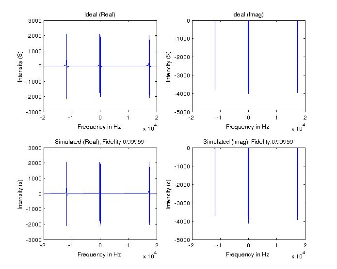

FileName : simGRAPE
Contents
Description
Simulates the NMR spectra after the application of theoretical operator and simulated GRAPE operator.
Command
simGRAPE(GRinfo,indm,swh,T2)
GRinfo : Variable in which all the information of grape pulse is stored.
indm : Initial density matrix on which the pulse will be applied, by default it is the thermal equilibrium density matrix of NMR system.
swh : Spectral width of the NMR spectra. The default is 40,000.
T2 : The NMR T2 decay rate, deafault is set to 0.2
Example Output
Shown below is an example plot. THe pulse is a 90x on all the spins acted upon the thermal equilibrium state.

function simGRAPE(GRinfo,indm,swh,T2) global gra gra=GRinfo; [Ix,Iy,Iz,~,~,~,sIHz] = prodop(gra.spinNumbers,gra.spinlist); %-------Declaring Default Inputs-------------------- if (nargin < 2 || isempty(indm)); indm=sum(Iz,3); end; if (nargin < 3 || isempty(swh)); swh=40000; end; if (nargin < 4 || isempty(T2)); T2=0.2; end; % CALCULATING TIME AND FREQUENCY AXIS td = round(swh); dw = 1/swh; t = 0:dw:(td-1)*dw; k = -td/2:(td-1)/2; f = k/(td*dw); eham = gra.Hint; detop = sum(Ix,3)+1i*sum(Iy,3); outdm_sim = gra.Usim*indm*(gra.Usim)'; outdm_th = gra.Utarg*indm*(gra.Utarg)'; s_sim=zeros(1,td); s_th=zeros(1,td); for m=1:td outdm1_sim=expm(-1i*eham*t(m))*outdm_sim*expm(1i*eham*t(m)); outdm1_th=expm(-1i*eham*t(m))*outdm_th*expm(1i*eham*t(m)); s_sim(m)=trace(detop*outdm1_sim); s_th(m)=trace(detop*outdm1_th); end s_sim=s_sim.*exp(-t/T2); s_th=s_th.*exp(-t/T2); %------------------Fourier Transform------------------------ S_sim=fftshift(fft(s_sim)); S_th=fftshift(fft(s_th)); figure subplot(2,2,1),plot(f,real(S_th)); xlabel('Frequency in Hz'); ylabel('Intensity (S)'); title('Ideal (Real)'); subplot(2,2,2),plot(f,imag(S_th)); xlabel('Frequency in Hz'); ylabel('Intensity (S)'); title('Ideal (Imag)'); subplot(2,2,3),plot(f,real(S_sim)); xlabel('Frequency in Hz'); ylabel('Intensity (s)'); title(['Simulated (Real); Fidelity:',num2str(gra.IDEALfidelity)]); subplot(2,2,4),plot(f,imag(S_sim)); xlabel('Frequency in Hz'); ylabel('Intensity (s)'); title(['Simulated (Imag): Fidelity:',num2str(gra.IDEALfidelity)]);